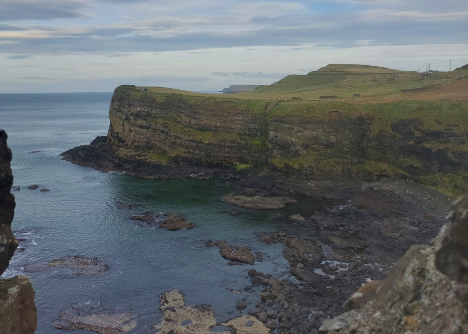
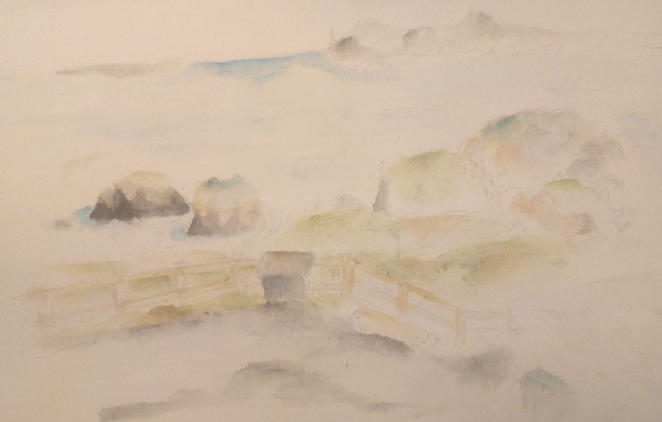
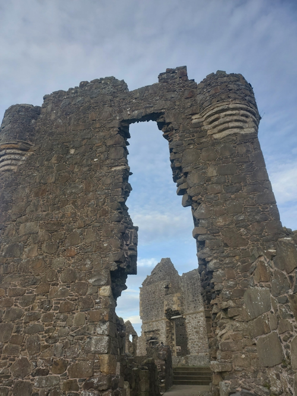

This blog thing hasn't been used for quite a while (a little over a year), but now that things have settled a little bit, I can finally fill this website up with a little more content. It looks a bit bland and sad now.
I know this isn't the most interesting post, but I just thought I'd write something to get the ball rolling. I have a few ideas for future posts, but I don't want to say too much yet.
Anyways here's my trip up to the north.
First stop in the trip was a little seaside town called Ballycastle.
Lovely fish and chips, good ice cream, very skippably thin stones on the beach... Overall a 10/10 seaside town.
One of the highlights of the trip was visiting Carrick-a-rede, which is like a cliff or something.
There was a rope bridge but I didn't go on it. I cheaped out on 15 pounds while I watched the rest of my family enjoy the thrill of crossing a bridge.
I didn't take any pictures, but I did draw this very washed out watercolour that I drew sitting next to a difibrillator.

We were planning on going to the Giant's Causeway but decided not to. It's just a pile of rocks anyways.
One other thing we did do though, was visit Dunluce Castle. With such an amazing tourist centre, the ruin didn't feel too touristy. In the grand sense that 400 years of history was being condensed into a gift shop with some plastic swords, it felt a lot like Trinity.
The castle itself was very beautiful.
